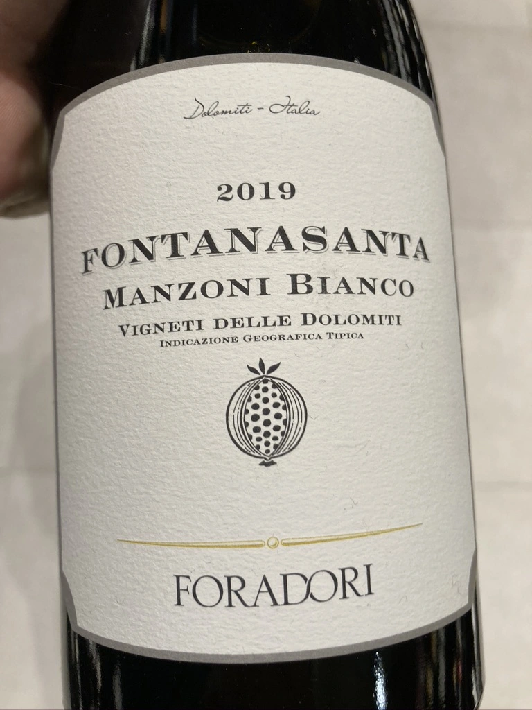

- Type
- White Still, Dry
- Producer
- Foradori
- Vintage
- 2019
- Location
- Italy, IGP Vigneti delle Dolomiti
- Grapes
- Manzoni Bianco
- Alcohol
- 12.5
- Sugar
- 0.6
- Price
- 180 UAH, 599 UAH
- Cellar
- 1 bottle
100% Manzoni Bianco, an early-20th-century crossing of Riesling and Pinot Bianco. Foradori organically farms and hand-harvests 3 hectares on clay-limestone soils in the Fontanasanta hills above Trento. Destemmed fruit with 3-4-day skin maceration; aged 8 months in acacia barrel, concrete and clay.
Ratings
2020-10-23 - 5.50
My second Foradori wine, but this time I am disappointed. Low intervention philosophy might be a good thing, but in this particular case result is rather faulty thanks to excessive amounts of sulfur compounds (dihydrogen sulfide, I am smelling you, and I don’t quite enjoy the process). So on the canvas of struck matches you may find silicon lighter and citrus notes. But than you make a sip and it’s tasty! Very good refreshing acidity, citrus flavours. Tasty, but the overly faulty nose is killing me.
2022-06-08 - 7.50
Considering my previous review one would think that I am not going to taste this wine ever again. But I’ve managed to get few bottles for an amazing price, so now I have a chance to see its development over almost 2 years. Sulfur compounds are still present, but now in lower amounts making more room for other things like citrus, ginger, sauerkraut - all that on the same canvas of struck matches. And while nose is still questionable, Manzoni Bianco is tasty, with good acidity, citrus flavours mixed with field flowers and long finish. Confusing experience for those who love crazy wines.